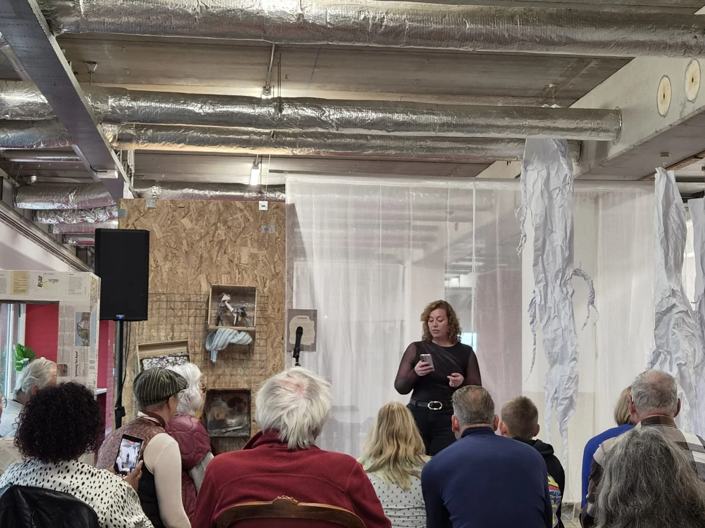
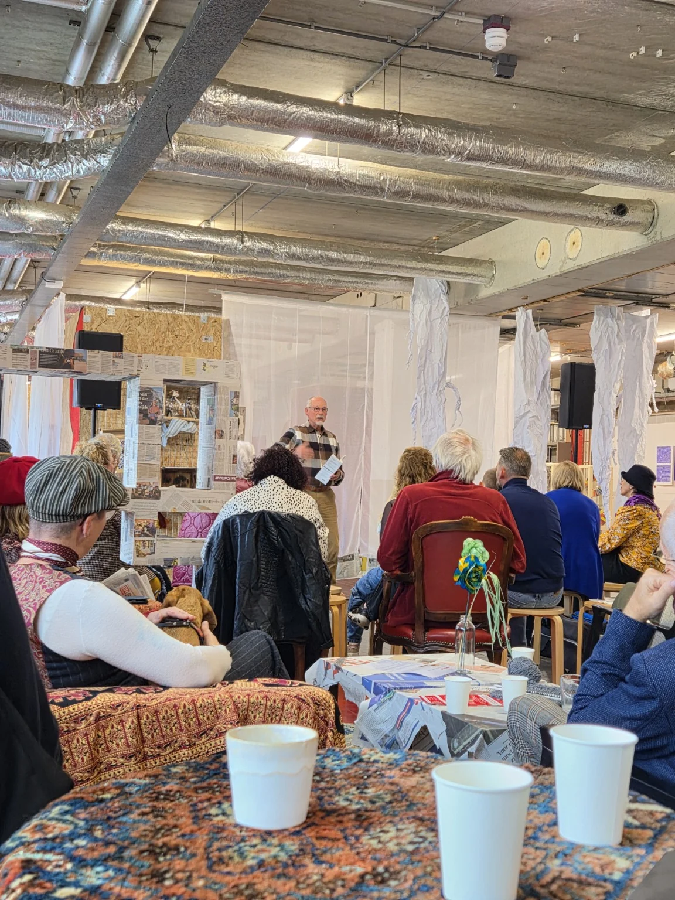
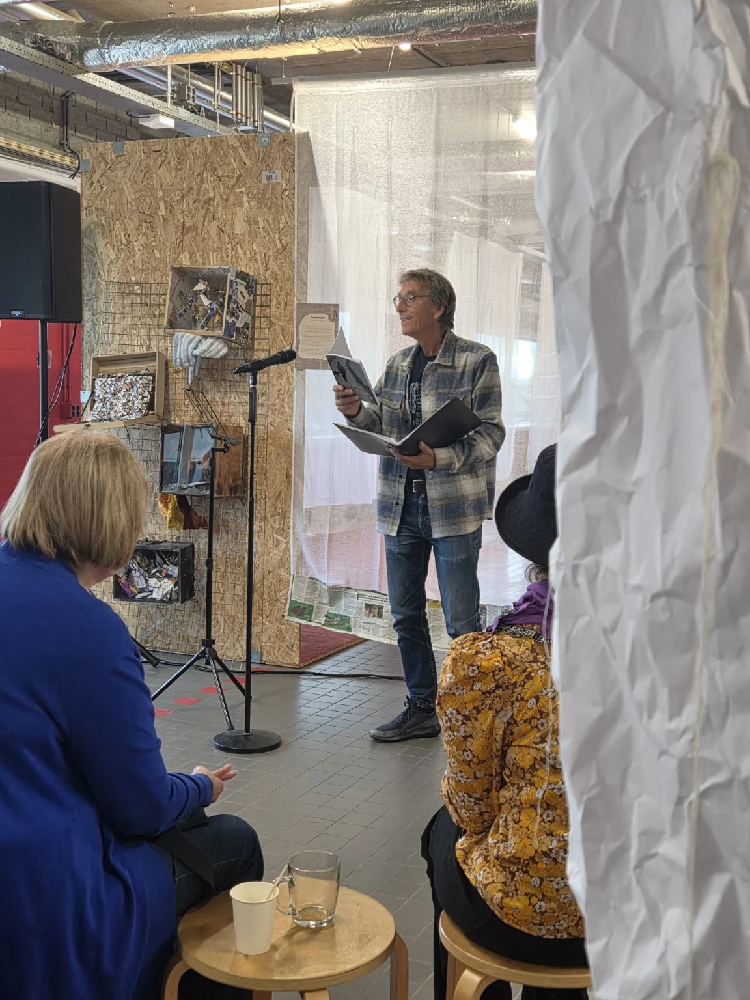
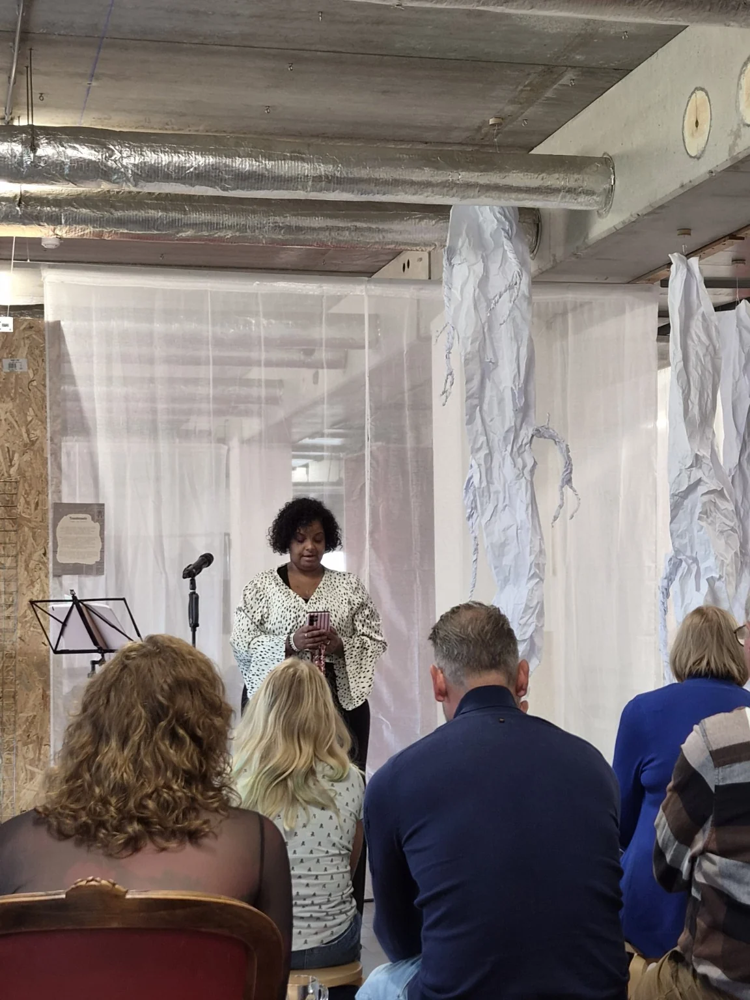
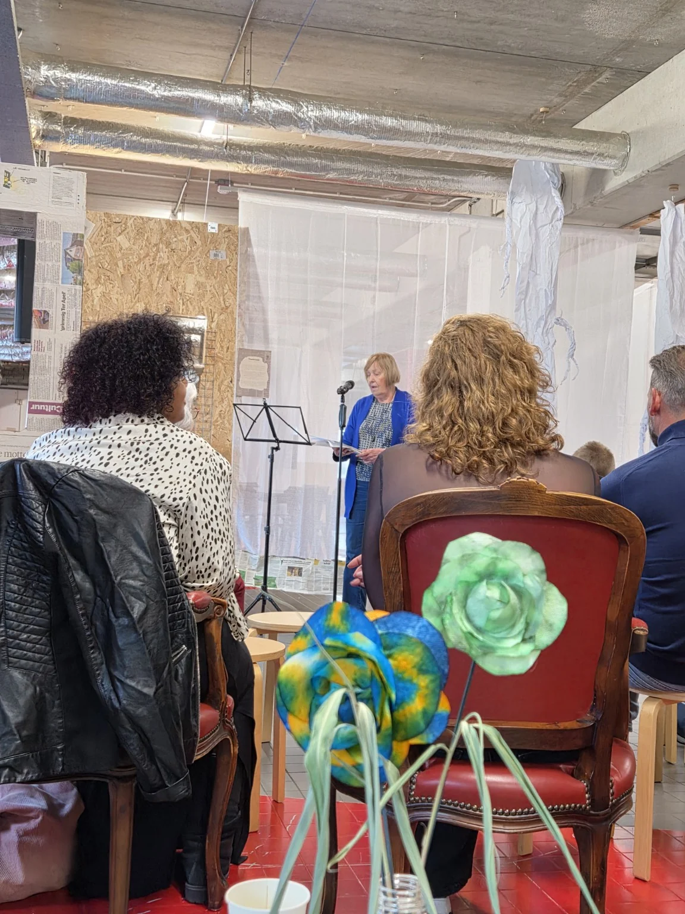
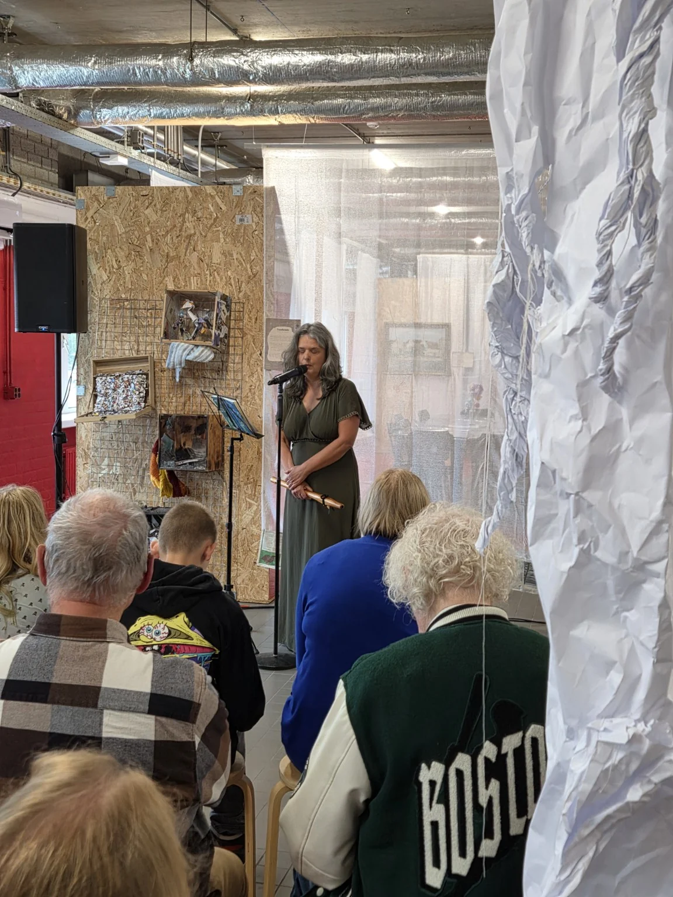
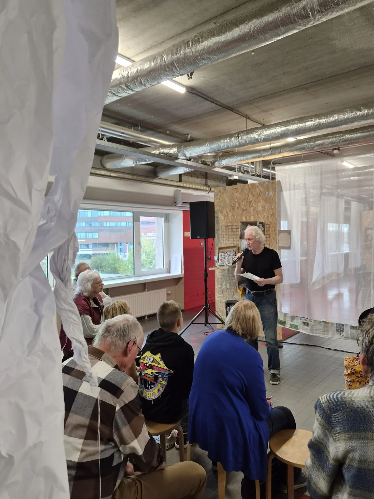
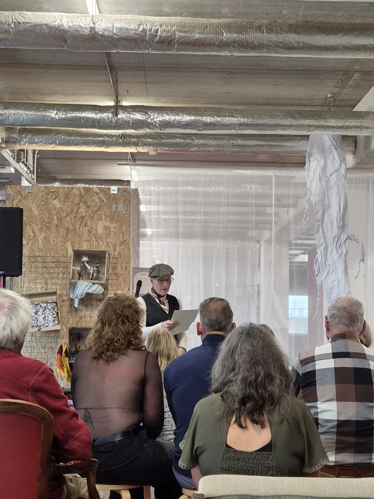

18 oktober 2026 · De eerste editie
Poetry MiddagRoosendaal
De woorden klonken.
De herinnering blijft.
Bedankt voor een middag vol woorden, verhalen en aandacht voor elkaar.
Bekijk de foto’s
Woorden. Verhalen. Ontmoetingen.
Een middag
die blijft hangen.
Op zondag 18 oktober 2026 kwamen voordragers en luisteraars samen bij Museum Tongerlohuys – EKP in Roosendaal voor de eerste editie van onze Poetry Middag.
Tussen de kunst van ‘Museum Take-Over – Kringloop van Verhalen’ was er ruimte voor eigen woorden en verhalen. Voor een stem aan de microfoon en een zaal die luisterde.
Dank aan iedereen die het podium deelde, kwam luisteren of meehielp om deze eerste editie mogelijk te maken.
De kunst van het woord.

Onze eerste editie in beeld
Even terug
naar die middag.
De gezichten, de verhalen, het podium.
Klik op een foto om deze groter te bekijken.












Deze editie is afgelopen
Aanmelding gesloten
De Poetry Middag van 18 oktober 2026 heeft inmiddels plaatsgevonden. Aanmelden voor deze editie is niet meer mogelijk.
Geniet nog even na met de foto’s